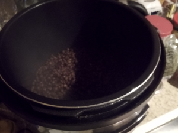
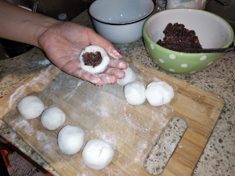
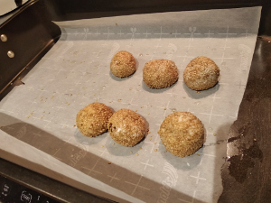
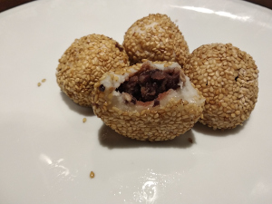

Sesame Balls
   
Ingredients: * Red beans, glutenous rice flour, purpule yams, hot water, olive oil, cacao powder
How to make it: * Cook red beans in instant pot for 30 min, than saute for 30 min * Bake Yams in over for an hour on 375 and blend with the beans * Make flour using everything else, inside add the beans/yams * Cover with add sesame and bake for 20 min on 375
** Nutrition:** * Flour 150 g - 550 calories, protein 10 g, fat 0, carbs 120 g * Sesame seeds 1⁄4 cup - calories 206, protein 6 g, fat 18 g,carbs 8 g * Red beans 50 g - calories 115 , protein 10 g, fat 0.3 g,carbs 31 g * Japanese Yam 50 g - calories 42, protein 1 g, fat 0 g, carbs 10 g * Olive oil 1 tsp - calories 40, protein 0 g, fat 4.5 g,carbs 0 g * Total: calories 953, protein 27 g, fat 22.8 g, carbs 169 g
Each ball: 95 calories, protein 2.7, fat 2.2, cabs 16.9